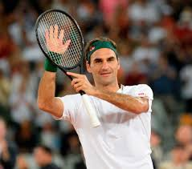

Tennis is mostly mental You win or lose thee match before You even go out there.
Roger Federer, (born August 8, 1981, Basel, Switzerland), Swiss tennis player, who dominated the sport in the early 21st century with his exceptional all-around game. His total of 20 career men’s singles Grand Slam championships is the most in tennis history.
Federer, who started playing tennis at age eight, became Switzerland’s junior champion when he was 14. In 1998 he captured the Wimbledon junior singles championship and secured the Orange Bowl junior tournament crown in Miami. The following year Federer made his debut on the Swiss Davis Cup team and became the youngest tennis player (at 18 years 4 months) to end the year among the world’s top 100, finishing that season at number 64. Federer competed at the 2000 Olympic Games in Sydney, advancing to the bronze medal match. The following year at Wimbledon he defeated Pete Sampras to reach the quarterfinals, and by the end of 2002 he was ranked number six in the world. In 2003 Federer won his first Grand Slam tournament title, at Wimbledon. The following year he captured his first Australian Open and his first U.S. Open and defended his Wimbledon title. A gifted shot maker, he was victorious in 11 of the 17 tournaments he played in 2004 and finished the year ranked number one in the world. In 2005 Federer’s numbers were similarly remarkable, as he won 11 of 15 tournaments, including Wimbledon and the U.S. Open. From July 2003 to November 2005 he also won a modern-record 24 straight finals.